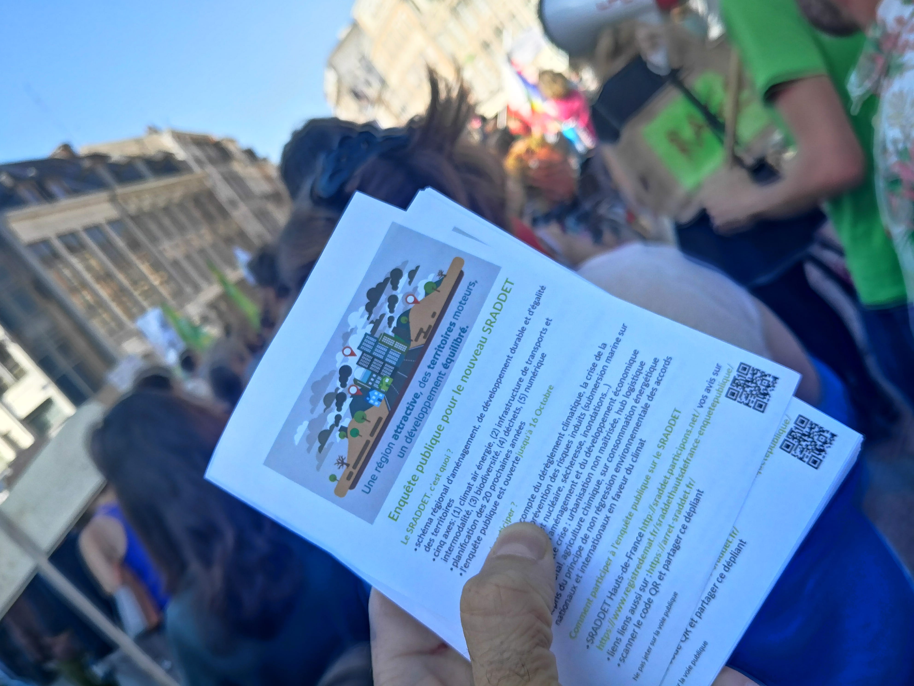
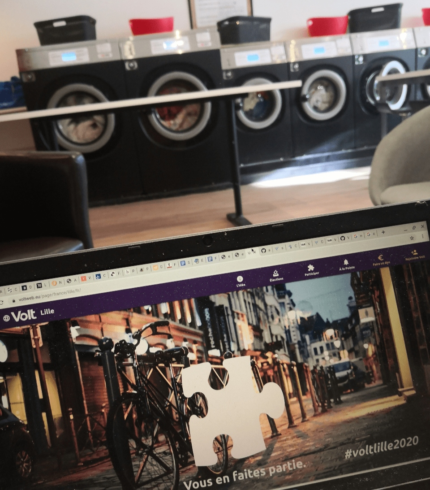

Bonjour à tous et à toutes,
une semaine courte, mais avec des nouvelles. Il était pas mal de gens les derniers jours qui m'ont demandé des informations sur Volt Lille et comment participer - c'est génial :) Nous sommes en cours d'écrire notre présentation, nos idées et notre but de créer une liste de citoyens pour les élections municipales - mais j'ai besoin de bosser à Amsterdam fin de semaine et avant, c'est l'intervention de SRADDET, donc pas mal de choses à faire. Si vous voulez-nous aider, envoyez un message à moi.
Entre temps, bonne lecture,
Sven
Nous avons participé dans la réunion des associations qui s'occupent dans la MRES avec les avis pour les grands documents publics (comme le PLU2, SDAGE, etc) - actuellement l'enquête publique pour le SRADDET est ouverte (jusqu'à 16 octobre). Le SRADDET est "la vision" pour la région jusqu'à 2030. Il comprend une analyse avec des chiffres clés, la vision, des orientations, les objectives et enfin, les règles obligatoires à suivre pour le planning à l'échelle municipale. Donc un document importante, mais loin dans beaucoup d'aspects, plus notamment en terme d'anticipation de la changement climatique (veuillez voir l'écho dans les médias).
Peut-être que l'enquête publique n'était pas pris pour sérieux par les organisateurs, parce qu'ils ont cachés les fichiers de SRADDET juste avant l'ouverture d'enquête. Mais a nos avis c'est une bonne occasion pour s'exprimer. Nous avons donc créé un mini-site web - https://arret-sraddet.fr/ (ça rime, c'est 'mieux de se souvenir) pour faire connaissance de SRADDET avec les fichiers et liens pertinents. La MRES va organiser un atelier début octobre et nous sommes en cours de créer un sommaire pour partager en ligne - si vous voulez nous aider, vous êtes bienvenue.
Nous avons commencé notre présentation pour les élections municipales pour les médias - quel est notre objectif, pourquoi montrer une liste, quelle démarche, quelle propositions. Notre nouveau bureau laisse le choix de participer dans une élection à des équipes dans les villes. Enfin, nous aimerons de nous présenter donc à Paris et à Lille. Nos équipes n'ont pas nombreuses, mais pour faciliter et essayer de montrer une liste ouverte pour les élections nous espérons que ça va marcher - seul ou ensemble avec des autres initiatives. En tout cas une expérience - il faut donc trouver des volontaires prêt à se mettre sur notre liste - une dizaine de courageux, une dizaine d'ambitieux, une trentaine de sympathisants et des témoins - vous en faites partie ?
Les projets suivants à Lille, la MEL et la région ont besoin de vos avis et de vos idées :
MEL
Région
Quels événements à Lille sont intéressants à participer ? Voici notre liste :
Des questions, des commentaires : info@voltlille.fr.
Bonne semaine à tous,
Sven